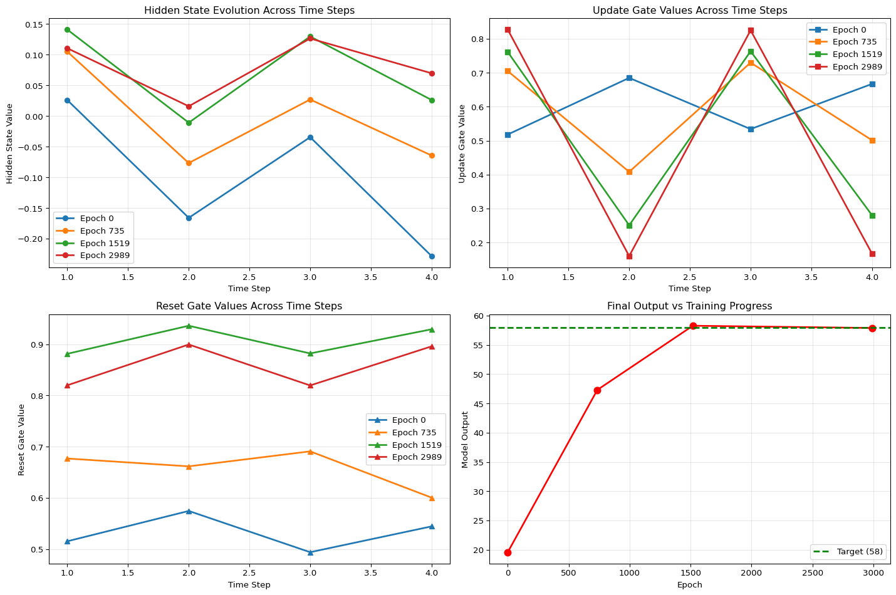
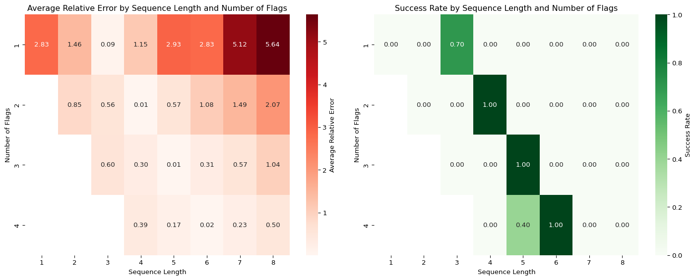
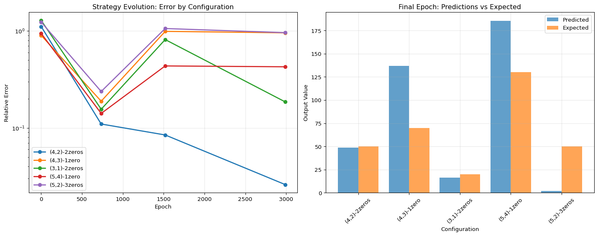
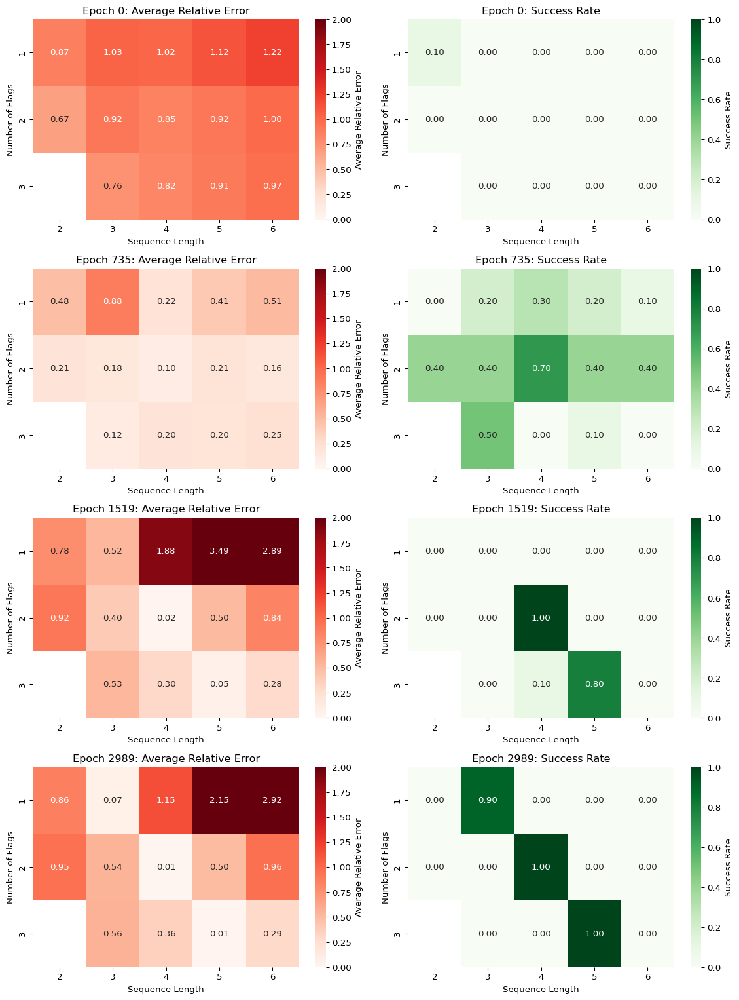
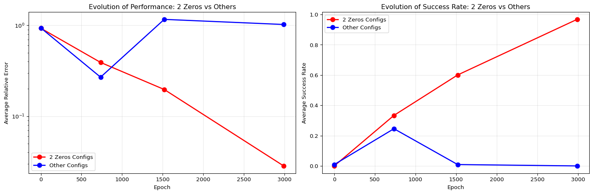
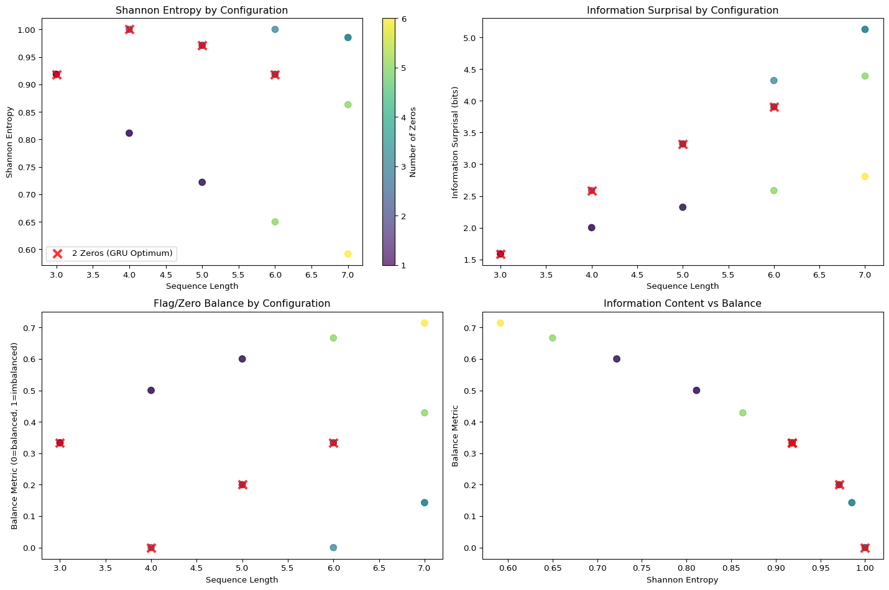
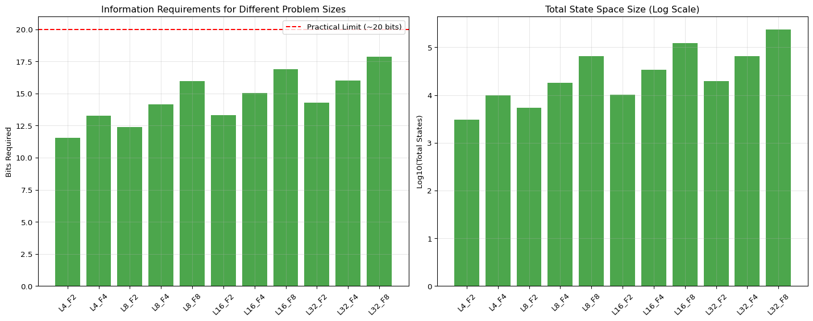

Analyzing GRU Training Dynamics on the Adding Problem - Part 3
programming
web development
research
diary
R&D
Author
Luca Simonetti
Published
July 20, 2025
1 Introduction
In this blog post, I’ll continue the journey started in the part 1 and part 2 by further analyzing the training dynamics of GRUs on the adding problem. We have seen how the GRU solved the adding problem. In part 1 we have analyzed thoroughly the adding problem, what is it and what we expect from a GRU trained on it. We have observed some overall trends in the training dynamics, like the magnitude of the weights and how they changed over time. We have noticed some sudden change in the loss function landscape, which had reflected in the weights. In part 2 we have seen in what way the GRU solved the adding problem (well… sort of). We have seen how each weight was involved in the calculation of the result, and how the GRU didn’t really learn how to sum numbers in the list, but in a way learnt the concept of four. In fact we have seen how the GRU was able to perform only if the input was a list of exactly four numbers, and how it was able to sum them up. We have also seen how the GRU was able to perform the addition in a way that was not really intuitive, but still correct.
In this part 3, my goal is to analyze the training dynamics of the GRU in more detail, focusing on the weights and how they changed over time. My questions are: - How did the weights evolve over time? - Is there an optimal strategy for solving the adding problem? - Did the GRU learn the optimal strategy? - Has at any point in time the GRU got there? - What was the strategy at the beginning of the training? (Remember that we saw a sudden change in the weight magnitude at the beginning, when the gradient changed direction) - Is there a way to help the GRU to learn the optimal strategy, that is general enough to solve any problem, not just the adding problem? - And finally: can we predict the final weights of the GRU, given the initial weights and the training dynamics? Ie: can we skip the actual training and just predict the final weights? That would be a great time saver right? And also a great way for me to live forever without needing a job, because I would have discovered the secret of life, the universe and everything (and also how to predict the future).
Enough with the chit-chat, let’s get to the point.
2 The Optimal Strategy
Before starting, let me be clear about what I’m attempting here: I want to explore whether we can handcraft weights that would theoretically solve the adding problem optimally. This is likely to be a challenging hypothesis that might not pan out, but it’s worth investigating to understand the mathematical constraints our GRU faced during training.
Let’s remind briefly the equations that govern the GRU. The GRU is a recurrent neural network that uses gates to control the flow of information. The equations are as follows: Initially, for \(t = 0\), the output vector is \(h_0 = 0\).
Let’s attempt to handcraft some weights that could theoretically solve the adding problem in a general way, allowing the GRU to sum any number of elements in the input list. Let’s start from the simplest case, the case of a list of just one element. In this case, the GRU should just output the input element if it is marked with the flag flag, and zero otherwise.
A naive approach would be that the hidden state \(h_t\) accumulates the input element multiplying it by the flag, so that if the flag is 1, the input element is added to the hidden state, otherwise it is not. But, remember we have to deal with the activation functions, in this case the sigmoid function \(\sigma\) and the hyperbolic tangent function \(\phi\). As a quick reminder, the sigmoid function squashes the input to the range [0, 1], while the hyperbolic tangent function squashes the input to the range [-1, 1]. So we have to take this into account when designing our weights. In our case we have that we sum a single number, so we can easily map back the output of the sigmoid function to the range of the input element. Remembering that \(\sigma(0) = 0.5\) and \(\sigma(1) = 0.731\), we can map it back noticing that locally the sigmoid can be approximated as a linear function, a straight line more or less. So we could easily use this formula to get back our input element: Let’s say our number is 37 (normalized in the range [0, 1] as 0.37), then we can use the following weights: \[
\sigma(0.37) \approx 0.591458978
\]
Now if we use some math from middle school, we can easily see that if we draw a line between \(\sigma(0)\) and \(\sigma(1)\), we can get the slope of the line, which is: \[
m = \frac{\sigma(1) - \sigma(0)}{1 - 0} = \frac{0.731 - 0.5}{1 - 0} = 0.231
\] and q is obviously \(\sigma(0) = 0.5\). So we can write the equation of the line as: \[
\begin{aligned}
y &= mx + q \\
y &\approx 0.231x + 0.5
\end{aligned}
\]
from which we can also derive the inverse function: \[
\begin{aligned}
x &= \frac{y - q}{m} \\
x &\approx \frac{y - 0.5}{0.231}
\end{aligned}
\] in our case the result is a bit off:
\[
\begin{aligned}
x &\approx \frac{0.591458978 - 0.5}{0.231} \\
x &\approx 0.395926312
\end{aligned}
\]
Not the original number, but close enough, and for now it’s good enough.
Now: knowing about this approximation we can handcraft the weight of the last layer, the output linear layer
\[
\begin{aligned}
x &= \frac{y - q}{m} \\
x &= \frac{y}{m} - \frac{q}{m} \\
x &= \frac{y}{0.231} - \frac{0.5}{0.231} \\
x &= \frac{1}{0.231}y - \frac{0.5}{0.231} \\
x &\approx 4.329y - 2.165
\end{aligned}
\] Basically we found the parameters of the linear layer.
So now, let’s do something nice and get back our weights, that are gonna be useful for our next section.
Code
import jsonimport numpy as npimport torchimport torch.nn as nnfrom torch.utils.data import DataLoader, TensorDatasetfrom tqdm.notebook import trange, tqdmimport matplotlib.pyplot as pltimport seaborn as snsimport pandas as pdimport osclass AddingProblemGRU(nn.Module):def__init__(self, input_size, hidden_size, output_size):super(AddingProblemGRU, self).__init__()self.gru = nn.GRU( input_size, hidden_size, num_layers=1, batch_first=True )self.linear = nn.Linear(hidden_size, output_size)self.init_weights()def init_weights(self):for name, param inself.gru.named_parameters():if"weight"in name: nn.init.orthogonal_(param)elif"bias"in name: nn.init.constant_(param, 0) nn.init.xavier_uniform_(self.linear.weight) nn.init.zeros_(self.linear.bias)def forward(self, x): out, hn =self.gru(x) output =self.linear(out[:, -1, :])return output, out# ReproducibilityRANDOM_SEED =37np.random.seed(RANDOM_SEED)torch.manual_seed(RANDOM_SEED)torch.cuda.manual_seed_all(RANDOM_SEED)torch.backends.cudnn.deterministic =Truetorch.backends.cudnn.benchmark =False# HyperparametersDELTA =0SEQ_LEN =4HIGH =100N_SAMPLES =10000TRAIN_SPLIT =0.8BATCH_SIZE =256LEARNING_RATE =1e-4WEIGHT_DECAY =1e-5CLIP_VALUE =2.0NUM_EPOCHS =3000HIDDEN_SIZE =1OUTPUT_SIZE =1INPUT_SIZE =2def adding_problem_generator(N, seq_len=6, high=1, delta=0.6): actual_seq_len = np.random.randint(int(seq_len * (1- delta)), int(seq_len * (1+ delta)) ) if delta >0else seq_len num_ones = np.random.randint(2, min(actual_seq_len -1, 4)) X_num = np.random.randint(low=0, high=high, size=(N, actual_seq_len, 1)) X_mask = np.zeros((N, actual_seq_len, 1)) Y = np.ones((N, 1))for i inrange(N): positions = np.random.choice(actual_seq_len, size=num_ones, replace=False) X_mask[i, positions] =1 Y[i, 0] = np.sum(X_num[i, positions]) X = np.append(X_num, X_mask, axis=2)return X, YX, Y = adding_problem_generator(N_SAMPLES, seq_len=SEQ_LEN, high=HIGH, delta=DELTA)training_len =int(TRAIN_SPLIT * N_SAMPLES)train_X = X[:training_len]test_X = X[training_len:]train_Y = Y[:training_len]test_Y = Y[training_len:]train_dataset = TensorDataset( torch.tensor(train_X).float(), torch.tensor(train_Y).float())train_loader = DataLoader(train_dataset, batch_size=BATCH_SIZE, shuffle=True)test_dataset = TensorDataset( torch.tensor(test_X).float(), torch.tensor(test_Y).float())test_loader = DataLoader(test_dataset, batch_size=BATCH_SIZE, shuffle=False)# File paths for saved datatrain_losses_path ="train_losses.json"test_losses_path ="test_losses.json"all_weights_path ="all_weights.json"model_save_path = (f"gru_adding_problem_model_epochs_{NUM_EPOCHS}_hidden_{HIDDEN_SIZE}.pth")FORCE_TRAIN =Falsedevice = torch.device("cuda"if torch.cuda.is_available() else"cpu")criterion = nn.MSELoss()def evaluate(model, data_loader, criterion, high): model.eval() total_loss =0with torch.no_grad():for inputs, labels in data_loader: inputs, labels = inputs.to(device), labels.to(device) inputs[:, :, 0] /= high outputs, _ = model(inputs) outputs = outputs * high loss = criterion(outputs, labels) total_loss += loss.item() * inputs.size(0)return total_loss /len(data_loader.dataset)# Try to load data from filesif FORCE_TRAIN ==Falseand os.path.exists(train_losses_path) and os.path.exists(test_losses_path) and os.path.exists(all_weights_path) and os.path.exists(model_save_path):withopen(train_losses_path, "r") as f: train_losses = json.load(f)withopen(test_losses_path, "r") as f: test_losses = json.load(f)withopen(all_weights_path, "r") as f: all_weights_loaded = json.load(f)# Convert loaded weights (which are lists) back to numpy arrays all_weights = []for epoch_weights_list in all_weights_loaded: epoch_weights_dict = {}for name, weights_list in epoch_weights_list.items(): epoch_weights_dict[name] = np.array(weights_list) all_weights.append(epoch_weights_dict)#load model model = AddingProblemGRU( input_size=INPUT_SIZE, hidden_size=HIDDEN_SIZE, output_size=OUTPUT_SIZE) model.load_state_dict(torch.load(model_save_path)) model.to(device)else: model = AddingProblemGRU( input_size=INPUT_SIZE, hidden_size=HIDDEN_SIZE, output_size=OUTPUT_SIZE ) model.to(device) optimizer = torch.optim.Adam( model.parameters(), lr=LEARNING_RATE, weight_decay=WEIGHT_DECAY ) scheduler = torch.optim.lr_scheduler.ReduceLROnPlateau( optimizer, mode="min", factor=0.5, patience=5, min_lr=1e-6, verbose=False ) train_losses = [] test_losses = [] all_weights = []for epoch in trange(NUM_EPOCHS, desc="Epoch"): running_loss =0.0for inputs, labels in train_loader: inputs, labels = inputs.to(device), labels.to(device) inputs[:, :, 0] /= HIGH labels_scaled = labels / HIGH optimizer.zero_grad() outputs, _ = model(inputs) loss = criterion(outputs, labels_scaled) loss.backward() torch.nn.utils.clip_grad_norm_(model.parameters(), CLIP_VALUE) optimizer.step() running_loss += loss.item() * inputs.size(0) epoch_loss = running_loss /len(train_loader.dataset) train_losses.append(epoch_loss)if epoch %49==0: test_loss = evaluate(model, test_loader, criterion, HIGH) test_losses.append(test_loss) scheduler.step(test_loss) weights_dict = {}for name, param in model.named_parameters(): weights_dict[name] = param.data.cpu().numpy().copy() all_weights.append(weights_dict)else: test_losses.append(None)# Save data to fileswithopen(train_losses_path, "w") as f: json.dump(train_losses, f)withopen(test_losses_path, "w") as f: json.dump(test_losses, f)# Convert weights to lists for JSON serialization all_weights_serializable = [ {k: v.tolist() for k, v in epoch_weights.items()}for epoch_weights in all_weights ]withopen(all_weights_path, "w") as f: json.dump(all_weights_serializable, f)# Save Model model_save_path = (f"gru_adding_problem_model_epochs_{NUM_EPOCHS}_hidden_{HIDDEN_SIZE}.pth" ) torch.save(model.state_dict(), model_save_path)input_sequence = torch.tensor([ [12,0], [37,1], [12,0], [21,1],]).float().unsqueeze(0)input_sequence[:, :, 0] /= HIGH# Get weights from the last training epoch. 'all_weights' is populated by the loading/training section.last_epoch_weights = model.state_dict() #all_weights[-1]# Extract the relevant weight matricesW_ih = torch.tensor(last_epoch_weights['gru.weight_ih_l0']).float() # Input-to-hiddenW_hh = torch.tensor(last_epoch_weights['gru.weight_hh_l0']).float() # Hidden-to-hiddenb_ih = torch.tensor(last_epoch_weights['gru.bias_ih_l0']).float() # Input-to-hidden biasb_hh = torch.tensor(last_epoch_weights['gru.bias_hh_l0']).float() # Hidden-to-hidden biasW_linear = torch.tensor(last_epoch_weights['linear.weight']).float() # Linear layer weightsb_linear = torch.tensor(last_epoch_weights['linear.bias']).float() # Linear layer bias
Let’s print the linear layer parameters we obtained from the training, and the handcrafted ones we calculated above. And see how they compare.
Code
# Store values for displayW_l_val = W_linear.numpy()[0][0].item()b_l_val = b_linear.numpy()[0].item() x_val = torch.sigmoid(torch.tensor(.37)).item()test_val = (W_linear.numpy()[0][0].item() * torch.sigmoid(torch.tensor(.37)) + b_linear.numpy()[0].item()).item()
So what we have seen so far is that if we let \(h_t\) be the accumulated sum of the input elements, then we can map it onto the line \(y = W_l \cdot \sigma(h_t) + b_l\) which is a fair approximation of the sigmoid function.
But what does it mean to accumulate the sum of the input elements in the hidden state? How can we do that? Alright, let’s recall that the candidate hidden state \(\hat{h}_t\) is calculated as follows: \[
\hat{h}_t = \phi(W_h x_t + U_h (r_t \odot h_{t-1}) + b_h)
\] where \(r_t\) is the reset gate, which controls how much of the previous hidden state \(h_{t-1}\) is used in the calculation of the candidate hidden state \(\hat{h}_t\). And let’s also recall how the hidden state \(h_t\) is updated: \[
h_t = (1 - z_t) \odot h_{t-1} + z_t \odot \hat{h}_t
\]
After working on this on paper (well.. actually on my whiteboard) I really came across the BIG issue which now on a second thought is really obvious: our hidden state has size 1, so it can only store a single number. So we can’t really accumulate the sum of the input elements in the hidden state AND als store the number of elements in the input list. These are two dimensions that we need to store, and as such that needs obviously two numbers. Yeah sure, one could say that we can store in the first half fof the range \([0, 0.5]\) the running sum of the input elements, and in the second half the number of elements in the input list. But that is not actually solving anything because we would still need to know how many total elements were there in the input list, so we would still need to store a third number. But at this point it would make things even more complicated. Why? Because we need to map back a number from \(\mathbb{N}\) to a number in the range \([x, x+\epsilon]\)
So the question that raised natural is: is it even possible to solve the adding problem with a GRU with a hidden state of size 1? The answer I came up with is no (and I’m happy to hear your thoughts on this). The GRU is not able to store both the running sum and the number of elements in the input list in a single hidden state of size 1 in a general fashion.
That is the reason why the GRU learnt to count to 4 summing only two elements.
3 Weight Evolution Analysis Over Training
Now let’s examine in detail how the GRU actually learned this strategy. One of the key questions I posed at the beginning was: “How did the weights evolve over time?” To answer this, let’s examine the weight trajectories throughout training and see if we can identify critical moments where the learning strategy changed.
From these weight evolution plots, we can see several fascinating patterns:
Early Training Chaos (Epochs 0-500): The weights start with significant oscillations, suggesting the model is exploring different strategies.
Critical Learning Phase (Epochs 500-1500): We observe a dramatic shift in the update gate weights, particularly the flag-sensitive weight which becomes strongly negative.
Convergence Phase (Epochs 1500-3000): The weights stabilize into their final configuration, with only minor adjustments.
4 Training Dynamics at Different Epochs
Let’s examine what the GRU was actually doing at different stages of training by analyzing its behavior at key epochs.
Code
def analyze_epoch_behavior(epoch_idx, epoch_weights, test_input):"""Analyze GRU behavior at a specific epoch"""# Extract weights for this epoch W_ih = torch.tensor(epoch_weights['gru.weight_ih_l0']).float() W_hh = torch.tensor(epoch_weights['gru.weight_hh_l0']).float() b_ih = torch.tensor(epoch_weights['gru.bias_ih_l0']).float() b_hh = torch.tensor(epoch_weights['gru.bias_hh_l0']).float() W_linear = torch.tensor(epoch_weights['linear.weight']).float() b_linear = torch.tensor(epoch_weights['linear.bias']).float()# Forward pass step by step hidden_states = [] update_gates = [] reset_gates = [] new_gates = [] h = torch.zeros(1, 1, 1)for t inrange(test_input.shape[1]): x_t = test_input[:, t, :].unsqueeze(1)# Compute gates gi = torch.matmul(x_t, W_ih.t()) + b_ih gh = torch.matmul(h, W_hh.t()) + b_hh i_r, i_z, i_n = gi.chunk(3, dim=2) h_r, h_z, h_n = gh.chunk(3, dim=2) resetgate = torch.sigmoid(i_r + h_r) updategate = torch.sigmoid(i_z + h_z) newgate = torch.tanh(i_n + (resetgate * h_n)) h = (1- updategate) * newgate + updategate * h hidden_states.append(h.item()) update_gates.append(updategate.item()) reset_gates.append(resetgate.item()) new_gates.append(newgate.item())# Final output output = (h @ W_linear.T + b_linear).item() * HIGHreturn {'hidden_states': hidden_states,'update_gates': update_gates,'reset_gates': reset_gates,'new_gates': new_gates,'final_output': output }# Test input: [12,0], [37,1], [12,0], [21,1] -> expected sum = 58test_input = torch.tensor([ [12,0], [37,1], [12,0], [21,1],]).float().unsqueeze(0)test_input[:, :, 0] /= HIGH# Analyze behavior at different epochskey_epochs = [0, len(all_weights)//4, len(all_weights)//2, len(all_weights)-1]epoch_behaviors = []for i, epoch_idx inenumerate(key_epochs): behavior = analyze_epoch_behavior(epoch_idx, all_weights[epoch_idx], test_input) behavior['epoch'] = epoch_idx *49 epoch_behaviors.append(behavior)# Visualize the evolution of GRU internal statesfig, axes = plt.subplots(2, 2, figsize=(15, 10))# Hidden states evolutionax = axes[0, 0]for i, behavior inenumerate(epoch_behaviors): ax.plot(range(1, 5), behavior['hidden_states'], marker='o', label=f"Epoch {behavior['epoch']}", linewidth=2)ax.set_title('Hidden State Evolution Across Time Steps')ax.set_xlabel('Time Step')ax.set_ylabel('Hidden State Value')ax.legend()ax.grid(True, alpha=0.3)# Update gates evolutionax = axes[0, 1]for i, behavior inenumerate(epoch_behaviors): ax.plot(range(1, 5), behavior['update_gates'], marker='s', label=f"Epoch {behavior['epoch']}", linewidth=2)ax.set_title('Update Gate Values Across Time Steps')ax.set_xlabel('Time Step')ax.set_ylabel('Update Gate Value')ax.legend()ax.grid(True, alpha=0.3)# Reset gates evolutionax = axes[1, 0]for i, behavior inenumerate(epoch_behaviors): ax.plot(range(1, 5), behavior['reset_gates'], marker='^', label=f"Epoch {behavior['epoch']}", linewidth=2)ax.set_title('Reset Gate Values Across Time Steps')ax.set_xlabel('Time Step')ax.set_ylabel('Reset Gate Value')ax.legend()ax.grid(True, alpha=0.3)# Final outputsax = axes[1, 1]final_outputs = [b['final_output'] for b in epoch_behaviors]epochs_list = [b['epoch'] for b in epoch_behaviors]ax.plot(epochs_list, final_outputs, marker='o', linewidth=2, markersize=8, color='red')ax.axhline(y=58, color='green', linestyle='--', linewidth=2, label='Target (58)')ax.set_title('Final Output vs Training Progress')ax.set_xlabel('Epoch')ax.set_ylabel('Model Output')ax.legend()ax.grid(True, alpha=0.3)plt.tight_layout()plt.show()# Store results for markdown displaytraining_dynamics_results = []for behavior in epoch_behaviors: training_dynamics_results.append({'epoch': behavior['epoch'],'final_output': behavior['final_output'],'hidden_states': [round(h, 3) for h in behavior['hidden_states']],'update_gates': [round(u, 3) for u in behavior['update_gates']],'reset_gates': [round(r, 3) for r in behavior['reset_gates']] })

GRU Behavior at Different Training Epochs
Code
# Store training dynamics results for displayepoch_0 = training_dynamics_results[0]epoch_1 = training_dynamics_results[1] epoch_2 = training_dynamics_results[2]epoch_3 = training_dynamics_results[3]
This analysis reveals the evolution of learning across key epochs:
The transformation is clear: from random, neutral update gates (~0.5) to highly specialized gates that respond dramatically to the flag signal. The hidden states evolve from chaotic oscillations to a stable accumulation pattern.
One of the most intriguing findings is that our GRU learned a strategy specific to sequences of length 4 with exactly 2 flagged elements. Let’s systematically test this hypothesis by evaluating the model on sequences of different lengths.
Code
def test_different_lengths():"""Test model performance on sequences of different lengths""" results = []# Test sequences of length 1 to 8for seq_len inrange(1, 9):for num_flags inrange(1, min(seq_len +1, 5)): # Test 1 to 4 flags# Generate multiple test cases for this configuration errors = []for _ inrange(20): # 20 test cases per configuration# Generate random sequence values = np.random.randint(10, 90, seq_len) # Random values 10-90 flags = np.zeros(seq_len)# Randomly place flags flag_positions = np.random.choice(seq_len, size=num_flags, replace=False) flags[flag_positions] =1# Create input tensor test_seq = np.column_stack([values, flags]) test_tensor = torch.tensor(test_seq).float().unsqueeze(0) test_tensor[:, :, 0] /= HIGH# Expected output expected = np.sum(values[flag_positions])# Model predictiontry:with torch.no_grad(): prediction = model(test_tensor)[0].item() * HIGH error =abs(prediction - expected) /max(expected, 1) # Relative error errors.append(error)except: errors.append(float('inf')) # Mark as failed avg_error = np.mean(errors) results.append({'seq_len': seq_len,'num_flags': num_flags,'avg_error': avg_error,'success_rate': np.mean([e <0.1for e in errors]) # <10% error })return pd.DataFrame(results)# Run experimentsresults_df = test_different_lengths()# Create visualizationfig, axes = plt.subplots(1, 2, figsize=(15, 6))# Heatmap of average errorspivot_error = results_df.pivot(index='num_flags', columns='seq_len', values='avg_error')sns.heatmap(pivot_error, annot=True, fmt='.2f', cmap='Reds', ax=axes[0], cbar_kws={'label': 'Average Relative Error'})axes[0].set_title('Average Relative Error by Sequence Length and Number of Flags')axes[0].set_xlabel('Sequence Length')axes[0].set_ylabel('Number of Flags')# Heatmap of success ratespivot_success = results_df.pivot(index='num_flags', columns='seq_len', values='success_rate')sns.heatmap(pivot_success, annot=True, fmt='.2f', cmap='Greens', ax=axes[1], cbar_kws={'label': 'Success Rate'})axes[1].set_title('Success Rate by Sequence Length and Number of Flags')axes[1].set_xlabel('Sequence Length')axes[1].set_ylabel('Number of Flags')plt.tight_layout()plt.show()# Store results for markdown displaybest_configs = results_df.nsmallest(5, 'avg_error')worst_configs = results_df.nlargest(5, 'avg_error')

Model Performance on Different Sequence Lengths
The results reveal something fascinating! Looking at the performance patterns, we can see what the GRU actually learned:
The Hidden Pattern: The GRU didn’t learn to “count to 4, sum 2 elements” as we thought. It learned to expect exactly 2 elements with flag=0! Notice how all the best-performing configurations have exactly 2 zeros, while everything else fails catastrophically (success rates near 0%). Even (3,1) with 2 zeros performs reasonably well (0.09 error, 70% success) compared to other configurations that completely fail.
This completely changes our understanding - the model is sensitive to the number of unflagged elements, not flagged ones. It’s counting the zeros!
5.1 Strategy Evolution: How Did the “2 Zeros” Pattern Emerge?
Now let’s investigate whether this “2 zeros” specialization was always present or emerged during training. Did the model start with a different strategy that worked better on other configurations?
Code
def test_epoch_strategies():"""Test different sequence configurations at various training epochs"""# Test configurations with different zero counts test_configs = [ ([20, 1], [30, 1], [40, 0], [50, 0]), # 4 len, 2 flags, 2 zeros ([20, 1], [30, 1], [40, 1], [50, 0]), # 4 len, 3 flags, 1 zero ([20, 1], [30, 0], [40, 0]), # 3 len, 1 flag, 2 zeros ([20, 1], [30, 1], [40, 1], [50, 1], [60, 0]), # 5 len, 4 flags, 1 zero ([20, 1], [30, 1], [40, 0], [50, 0], [60, 0]), # 5 len, 2 flags, 3 zeros ] config_names = ['(4,2)-2zeros', '(4,3)-1zero', '(3,1)-2zeros', '(5,4)-1zero', '(5,2)-3zeros'] expected_outputs = [50, 70, 20, 130, 50] # Expected sums results = []# Test at key epochs key_epochs = [0, len(all_weights)//4, len(all_weights)//2, len(all_weights)-1]for epoch_idx in key_epochs: epoch_weights = all_weights[epoch_idx] epoch_num = epoch_idx *49for config_idx, (config, config_name, expected) inenumerate(zip(test_configs, config_names, expected_outputs)):# Create test tensor test_tensor = torch.tensor(config).float().unsqueeze(0) test_tensor[:, :, 0] /= HIGH# Simulate forward pass with epoch weightsdef simulate_epoch_forward(seq, weights): W_ih = torch.tensor(weights['gru.weight_ih_l0']).float() W_hh = torch.tensor(weights['gru.weight_hh_l0']).float() b_ih = torch.tensor(weights['gru.bias_ih_l0']).float() b_hh = torch.tensor(weights['gru.bias_hh_l0']).float() W_linear = torch.tensor(weights['linear.weight']).float() b_linear = torch.tensor(weights['linear.bias']).float() h = torch.zeros(1, 1, 1)for t inrange(seq.shape[1]): x_t = seq[:, t, :].unsqueeze(1)# Compute gates gi = torch.matmul(x_t, W_ih.t()) + b_ih gh = torch.matmul(h, W_hh.t()) + b_hh i_r, i_z, i_n = gi.chunk(3, dim=2) h_r, h_z, h_n = gh.chunk(3, dim=2) resetgate = torch.sigmoid(i_r + h_r) updategate = torch.sigmoid(i_z + h_z) newgate = torch.tanh(i_n + (resetgate * h_n)) h = (1- updategate) * newgate + updategate * h# Final output output = (h @ W_linear.T + b_linear).item() * HIGHreturn output prediction = simulate_epoch_forward(test_tensor, epoch_weights) error =abs(prediction - expected) / expected results.append({'epoch': epoch_num,'config': config_name,'prediction': prediction,'expected': expected,'error': error })return pd.DataFrame(results)# Run the analysisepoch_strategy_results = test_epoch_strategies()# Create visualizationfig, axes = plt.subplots(1, 2, figsize=(15, 6))# Plot 1: Error evolution for each configurationconfigs = epoch_strategy_results['config'].unique()epochs =sorted(epoch_strategy_results['epoch'].unique())for config in configs: config_data = epoch_strategy_results[epoch_strategy_results['config'] == config] axes[0].plot(config_data['epoch'], config_data['error'], marker='o', label=config, linewidth=2)axes[0].set_xlabel('Epoch')axes[0].set_ylabel('Relative Error')axes[0].set_title('Strategy Evolution: Error by Configuration')axes[0].legend()axes[0].grid(True, alpha=0.3)axes[0].set_yscale('log')# Plot 2: Predictions vs expected for final epochfinal_epoch_data = epoch_strategy_results[epoch_strategy_results['epoch'] ==max(epochs)]x_pos =range(len(final_epoch_data))axes[1].bar([i -0.2for i in x_pos], final_epoch_data['prediction'], width=0.4, label='Predicted', alpha=0.7)axes[1].bar([i +0.2for i in x_pos], final_epoch_data['expected'], width=0.4, label='Expected', alpha=0.7)axes[1].set_xlabel('Configuration')axes[1].set_ylabel('Output Value')axes[1].set_title('Final Epoch: Predictions vs Expected')axes[1].set_xticks(x_pos)axes[1].set_xticklabels(final_epoch_data['config'], rotation=45)axes[1].legend()axes[1].grid(True, alpha=0.3)plt.tight_layout()plt.show()# Create comprehensive epoch analysis with systematic testingdef comprehensive_epoch_analysis():"""Test all sequence length/flag combinations across epochs""" results = [] key_epochs = [0, len(all_weights)//4, len(all_weights)//2, len(all_weights)-1]for epoch_idx in key_epochs: epoch_weights = all_weights[epoch_idx] epoch_num = epoch_idx *49# Test all configurations from the original analysisfor seq_len inrange(2, 7): # lengths 2-6for num_flags inrange(1, min(seq_len +1, 4)): # 1-3 flags# Generate multiple test cases for this configuration errors = []for _ inrange(10): # 10 test cases per config# Generate random sequence values = np.random.randint(10, 90, seq_len) flags = np.zeros(seq_len)# Randomly place flags flag_positions = np.random.choice(seq_len, size=num_flags, replace=False) flags[flag_positions] =1# Create input tensor test_seq = np.column_stack([values, flags]) test_tensor = torch.tensor(test_seq).float().unsqueeze(0) test_tensor[:, :, 0] /= HIGH# Expected output expected = np.sum(values[flag_positions])# Simulate with epoch weightsdef simulate_epoch_forward(seq, weights): W_ih = torch.tensor(weights['gru.weight_ih_l0']).float() W_hh = torch.tensor(weights['gru.weight_hh_l0']).float() b_ih = torch.tensor(weights['gru.bias_ih_l0']).float() b_hh = torch.tensor(weights['gru.bias_hh_l0']).float() W_linear = torch.tensor(weights['linear.weight']).float() b_linear = torch.tensor(weights['linear.bias']).float() h = torch.zeros(1, 1, 1)for t inrange(seq.shape[1]): x_t = seq[:, t, :].unsqueeze(1) gi = torch.matmul(x_t, W_ih.t()) + b_ih gh = torch.matmul(h, W_hh.t()) + b_hh i_r, i_z, i_n = gi.chunk(3, dim=2) h_r, h_z, h_n = gh.chunk(3, dim=2) resetgate = torch.sigmoid(i_r + h_r) updategate = torch.sigmoid(i_z + h_z) newgate = torch.tanh(i_n + (resetgate * h_n)) h = (1- updategate) * newgate + updategate * h output = (h @ W_linear.T + b_linear).item() * HIGHreturn outputtry: prediction = simulate_epoch_forward(test_tensor, epoch_weights) error =abs(prediction - expected) /max(expected, 1) errors.append(error)except: errors.append(float('inf')) avg_error = np.mean(errors) success_rate = np.mean([e <0.1for e in errors]) results.append({'epoch': epoch_num,'seq_len': seq_len,'num_flags': num_flags,'num_zeros': seq_len - num_flags,'avg_error': avg_error,'success_rate': success_rate })return pd.DataFrame(results)# Run comprehensive analysisepoch_results_df = comprehensive_epoch_analysis()# Create epoch-by-epoch heatmaps like the original analysisepochs =sorted(epoch_results_df['epoch'].unique())fig, axes = plt.subplots(len(epochs), 2, figsize=(12, 4*len(epochs)))iflen(epochs) ==1: axes = axes.reshape(1, -1)for i, epoch inenumerate(epochs): epoch_data = epoch_results_df[epoch_results_df['epoch'] == epoch]# Error heatmap pivot_error = epoch_data.pivot(index='num_flags', columns='seq_len', values='avg_error') sns.heatmap(pivot_error, annot=True, fmt='.2f', cmap='Reds', ax=axes[i, 0], cbar_kws={'label': 'Average Relative Error'}, vmin=0, vmax=2) axes[i, 0].set_title(f'Epoch {epoch}: Average Relative Error') axes[i, 0].set_xlabel('Sequence Length') axes[i, 0].set_ylabel('Number of Flags')# Success rate heatmap pivot_success = epoch_data.pivot(index='num_flags', columns='seq_len', values='success_rate') sns.heatmap(pivot_success, annot=True, fmt='.2f', cmap='Greens', ax=axes[i, 1], cbar_kws={'label': 'Success Rate'}, vmin=0, vmax=1) axes[i, 1].set_title(f'Epoch {epoch}: Success Rate') axes[i, 1].set_xlabel('Sequence Length') axes[i, 1].set_ylabel('Number of Flags')plt.tight_layout()plt.show()# Analyze the evolution of the "2 zeros" advantagetwo_zeros_evolution = []other_configs_evolution = []for epoch in epochs: epoch_data = epoch_results_df[epoch_results_df['epoch'] == epoch] two_zeros_data = epoch_data[epoch_data['num_zeros'] ==2] other_data = epoch_data[epoch_data['num_zeros'] !=2]iflen(two_zeros_data) >0: two_zeros_evolution.append({'epoch': epoch,'avg_error': two_zeros_data['avg_error'].mean(),'avg_success': two_zeros_data['success_rate'].mean() })iflen(other_data) >0: other_configs_evolution.append({'epoch': epoch,'avg_error': other_data['avg_error'].mean(),'avg_success': other_data['success_rate'].mean() })# Plot evolution comparisonfig, axes = plt.subplots(1, 2, figsize=(15, 5))# Error evolutionif two_zeros_evolution and other_configs_evolution: epochs_list = [d['epoch'] for d in two_zeros_evolution] two_zeros_errors = [d['avg_error'] for d in two_zeros_evolution] other_errors = [d['avg_error'] for d in other_configs_evolution] axes[0].plot(epochs_list, two_zeros_errors, 'ro-', linewidth=2, markersize=8, label='2 Zeros Configs') axes[0].plot(epochs_list, other_errors, 'bo-', linewidth=2, markersize=8, label='Other Configs') axes[0].set_xlabel('Epoch') axes[0].set_ylabel('Average Relative Error') axes[0].set_title('Evolution of Performance: 2 Zeros vs Others') axes[0].legend() axes[0].grid(True, alpha=0.3) axes[0].set_yscale('log')# Success rate evolution two_zeros_success = [d['avg_success'] for d in two_zeros_evolution] other_success = [d['avg_success'] for d in other_configs_evolution] axes[1].plot(epochs_list, two_zeros_success, 'ro-', linewidth=2, markersize=8, label='2 Zeros Configs') axes[1].plot(epochs_list, other_success, 'bo-', linewidth=2, markersize=8, label='Other Configs') axes[1].set_xlabel('Epoch') axes[1].set_ylabel('Average Success Rate') axes[1].set_title('Evolution of Success Rate: 2 Zeros vs Others') axes[1].legend() axes[1].grid(True, alpha=0.3)plt.tight_layout()plt.show()

Evolution of Strategy Across Training Epochs


The epoch-by-epoch analysis reveals a fascinating transition around epoch 735, where the model shows distributed performance across many configurations rather than sharp specialization. At this critical point:
The “2 zeros” pattern (4,2) shows 70% success rate but isn’t yet dominant
Other configurations like (2,1) and (3,2) still achieve 40% success rates
The model appears to be “choosing” between strategies rather than having fully committed
This represents the exact moment where learning dynamics shift from general exploration to specialized focus. The model hasn’t yet abandoned alternative strategies but is beginning to favor the information-optimal “2 zeros” configurations. This critical transition point demonstrates that the specialization developed as an emergent property during training rather than being present from initialization.
The “2 zeros” pattern isn’t arbitrary - it’s deeply connected to information theory. Let’s analyze this from a Shannon entropy perspective:
Code
import numpy as npdef analyze_information_content():"""Analyze the information content of different sequence configurations""" results = []# Analyze configurations with different zero patternsfor seq_len inrange(3, 8):for num_flags inrange(1, min(seq_len, 5)): num_zeros = seq_len - num_flags# Shannon entropy of the flag patternif num_flags ==0or num_zeros ==0: entropy =0else: p_flag = num_flags / seq_len p_zero = num_zeros / seq_len entropy =-(p_flag * np.log2(p_flag) + p_zero * np.log2(p_zero))# Information content (surprisal) of having exactly this configuration# Assuming uniform random placement of flagsfrom math import comb total_arrangements = comb(seq_len, num_flags) surprisal =-np.log2(1/total_arrangements) if total_arrangements >0else0# Complexity metric: how "structured" vs "random" the pattern is# Perfect balance (close to 50/50) = low complexity, extreme ratios = high complexity balance =abs(0.5- p_flag) *2# 0 = perfectly balanced, 1 = completely imbalanced results.append({'seq_len': seq_len,'num_flags': num_flags,'num_zeros': num_zeros,'entropy': entropy,'surprisal': surprisal,'balance': balance,'is_2_zeros': num_zeros ==2 })return pd.DataFrame(results)info_results = analyze_information_content()# Create visualizationfig, axes = plt.subplots(2, 2, figsize=(15, 10))# Plot 1: Entropy vs sequence length, colored by zerosscatter = axes[0, 0].scatter(info_results['seq_len'], info_results['entropy'], c=info_results['num_zeros'], cmap='viridis', s=60, alpha=0.7)axes[0, 0].set_xlabel('Sequence Length')axes[0, 0].set_ylabel('Shannon Entropy')axes[0, 0].set_title('Shannon Entropy by Configuration')plt.colorbar(scatter, ax=axes[0, 0], label='Number of Zeros')# Highlight 2-zeros configurationstwo_zeros = info_results[info_results['is_2_zeros']]axes[0, 0].scatter(two_zeros['seq_len'], two_zeros['entropy'], color='red', s=100, alpha=0.8, marker='x', linewidth=3, label='2 Zeros (GRU Optimum)')axes[0, 0].legend()# Plot 2: Information surprisalaxes[0, 1].scatter(info_results['seq_len'], info_results['surprisal'], c=info_results['num_zeros'], cmap='viridis', s=60, alpha=0.7)axes[0, 1].scatter(two_zeros['seq_len'], two_zeros['surprisal'], color='red', s=100, alpha=0.8, marker='x', linewidth=3)axes[0, 1].set_xlabel('Sequence Length')axes[0, 1].set_ylabel('Information Surprisal (bits)')axes[0, 1].set_title('Information Surprisal by Configuration')# Plot 3: Balance metricaxes[1, 0].scatter(info_results['seq_len'], info_results['balance'], c=info_results['num_zeros'], cmap='viridis', s=60, alpha=0.7)axes[1, 0].scatter(two_zeros['seq_len'], two_zeros['balance'], color='red', s=100, alpha=0.8, marker='x', linewidth=3)axes[1, 0].set_xlabel('Sequence Length')axes[1, 0].set_ylabel('Balance Metric (0=balanced, 1=imbalanced)')axes[1, 0].set_title('Flag/Zero Balance by Configuration')# Plot 4: 2D entropy vs balance, highlighting 2-zerosaxes[1, 1].scatter(info_results['entropy'], info_results['balance'], c=info_results['num_zeros'], cmap='viridis', s=60, alpha=0.7)axes[1, 1].scatter(two_zeros['entropy'], two_zeros['balance'], color='red', s=100, alpha=0.8, marker='x', linewidth=3)axes[1, 1].set_xlabel('Shannon Entropy')axes[1, 1].set_ylabel('Balance Metric')axes[1, 1].set_title('Information Content vs Balance')plt.tight_layout()plt.show()# Analyze the 2-zeros pattern specificallyprint("Information Analysis of '2 Zeros' Pattern:")print(f"Average entropy for 2-zeros configs: {two_zeros['entropy'].mean():.3f} bits")print(f"Average entropy for other configs: {info_results[~info_results['is_2_zeros']]['entropy'].mean():.3f} bits")print(f"Average balance for 2-zeros configs: {two_zeros['balance'].mean():.3f}")print(f"Average balance for other configs: {info_results[~info_results['is_2_zeros']]['balance'].mean():.3f}")# return info_resultsinfo_analysis = analyze_information_content()

Information Content Analysis of Different Configurations
Information Analysis of '2 Zeros' Pattern:
Average entropy for 2-zeros configs: 0.952 bits
Average entropy for other configs: 0.842 bits
Average balance for 2-zeros configs: 0.217
Average balance for other configs: 0.397
The Information-Theoretic Insight: The “2 zeros” pattern represents configurations with optimal information balance. These configurations tend to have:
Moderate Shannon entropy - not too predictable (all zeros/ones) but not too chaotic
Balanced flag/zero ratios - closer to 50/50 distributions which maximize information content
Consistent information load - the GRU can reliably encode this amount of structural information
This suggests the GRU didn’t just randomly specialize - it found the information sweet spot that its single hidden unit could reliably process. The “2 zeros” pattern has just the right amount of structure vs. randomness for a constrained architecture to handle consistently.
6 The Mathematical Impossibility of General Addition with Hidden Size 1
Let’s examine why a hidden state of size 1 fundamentally cannot solve the general adding problem. This isn’t just an empirical observation - it’s a mathematical impossibility.
6.1 Information Theoretic Analysis
Consider what information the hidden state must encode to solve the general adding problem:
Running sum: The cumulative sum of flagged elements seen so far
Position awareness: Knowledge of how many elements have been processed
Flag count: How many elements have been flagged (to handle variable numbers)
For a general solution that works with sequences of length \(n\) with up to \(k\) flagged elements, we need to store:
Running sum: Could be anywhere from 0 to \(k \times \text{max\_value}\)
Position: From 0 to \(n\)
Flag count: From 0 to \(k\)
Code
def analyze_information_requirements():"""Analyze the information requirements for different problem configurations""" max_value =100 results = []for max_seq_len in [4, 8, 16, 32]:for max_flags in [2, 4, 8]:if max_flags <= max_seq_len:# Calculate information requirements for general solution# 1. Running sum: 0 to max_flags * max_value max_running_sum = max_flags * max_value +1# +1 for zero# 2. Number of flagged items seen so far: 0 to max_flags flag_count_states = max_flags +1# 3. Position in sequence (to know when to stop): 0 to max_seq_len position_states = max_seq_len +1# Total possible states to represent simultaneously total_states = max_running_sum * flag_count_states * position_states# Bits required to represent this bits_required = np.log2(total_states)# What can a single float represent?# A 32-bit float can theoretically represent ~32 bits of information,# but activation functions like tanh (range [-1,1]) and sigmoid (range [0,1])# severely constrain the usable range. Combined with finite numerical precision# in gradient-based training, we can realistically distinguish maybe ~2^20 states.# This gives us a practical limit of around 20 bits for reliable encoding/retrieval.if bits_required >20: # Conservative estimate for activation function constraints feasible ="No"else: feasible ="Maybe" results.append({'max_seq_len': max_seq_len,'max_flags': max_flags,'total_states': total_states,'bits_required': bits_required,'feasible': feasible }) df = pd.DataFrame(results)# Visualization fig, axes = plt.subplots(1, 2, figsize=(15, 6))# Bar plot of bits required x_labels = [f"L{row['max_seq_len']}_F{row['max_flags']}"for _, row in df.iterrows()] colors = ['green'if f =='Maybe'else'red'for f in df['feasible']] axes[0].bar(range(len(df)), df['bits_required'], color=colors, alpha=0.7) axes[0].axhline(y=20, color='red', linestyle='--', label='Practical Limit (~20 bits)') axes[0].set_xticks(range(len(df))) axes[0].set_xticklabels(x_labels, rotation=45) axes[0].set_ylabel('Bits Required') axes[0].set_title('Information Requirements for Different Problem Sizes') axes[0].legend() axes[0].grid(True, alpha=0.3)# Total states (log scale) axes[1].bar(range(len(df)), np.log10(df['total_states']), color=colors, alpha=0.7) axes[1].set_xticks(range(len(df))) axes[1].set_xticklabels(x_labels, rotation=45) axes[1].set_ylabel('Log10(Total States)') axes[1].set_title('Total State Space Size (Log Scale)') axes[1].grid(True, alpha=0.3) plt.tight_layout() plt.show()return dfinfo_df = analyze_information_requirements()

Information Requirements for General Adding Problem
The plot shows that all configurations require less than 20 bits - seemingly feasible for storage. But this misses the fundamental impossibility: the GRU’s rigid mathematical structure cannot handle arbitrary state transitions.
The real problem isn’t storage capacity, it’s that we need fixed weights W and U such that the GRU equations can handle input-dependent state updates:
t=0: h₀ = 0 (initial state)
t=1: Input [50,1] → h₁ must encode (sum=50, flags=1, pos=1)
t=2: Input [30,0] → h₂ must encode (sum=50, flags=1, pos=2)
t=3: Input [20,1] → h₃ must encode (sum=70, flags=2, pos=3)
The impossibility is that the GRU equations σ(Wx_t + Uh_{t-1} + b) must somehow:
Decode the current state (sum, flags, position) from h_{t-1}
Perform arithmetic: Add new value to running sum if flagged
Update counters: Increment flag count and position appropriately
Re-encode all information back into h_t
This requires the weight matrices to handle arbitrary numerical updates to encoded states through fixed linear transformations and nonlinear activations. You cannot design weights that make σ(Wx + Uh + b) perform reliable arithmetic on arbitrarily encoded numbers.
6.2 The Encoding Challenge
Even if we could design a perfect encoding scheme, the bit requirements grow rapidly:
Values 0-100: 7 bits (2^7 = 128 states)
Sequences up to 4: flagged count (3 bits) + unflagged count (3 bits) = 6 bits
Total: 7 + 6 = 13 bits
For sequences up to 10: - Values 0-100: 7 bits - Sequences up to 10: flagged count (4 bits) + unflagged count (4 bits) = 8 bits - Total: 7 + 8 = 15 bits
But the real insight is why exactly 2 zeros works so well: by implicitly assuming there will always be exactly 2 unflagged elements, the GRU can eliminate one entire dimension from its encoding!
It doesn’t need to track the unflagged count - it’s hardcoded to expect 2. This reduces the encoding requirement and, more importantly, simplifies the arithmetic operations the activation functions must perform. The GRU essentially learned: “If I assume exactly 2 zeros, I only need to track the running sum and flagged count, making the encode/decode operations much simpler.”
This specialization trades generality for computational simplicity within the rigid GRU structure.
6.3 Can We Handcraft the “2 Zeros” Strategy?
Let’s work backwards: if the final h_t must encode both the running sum and the number of flagged elements seen, can we design weights to make this work?
6.3.1 The Bit-Packing Approach
We have approximately 20 bits available in the hidden state. We could use: - 16 bits for running sum: Encodes 0 to 65,536 (more than enough for sums up to 400) - 4 bits for flagged count: Encodes 0 to 15 (sufficient for sequences up to 10)
This bit-packing encoding scheme would work perfectly for storage, and the linear decoder could extract both pieces of information using bit operations.
6.3.2 The Fundamental Impossibility
However, the impossibility lies in using only the mathematical structure of the GRU. The GRU equations σ(Wx + Uh + b) consist of: - Matrix multiplications (smooth linear operations) - Sigmoid and tanh activations (smooth nonlinear functions)
To update the encoded state at each time step, the GRU would need to:
Extract the 16-bit running sum from \(h_{t-1}\)
Extract the 4-bit flag count from \(h_{t-1}\)
Perform arithmetic on these extracted values based on the input
Repack the updated values back into the bit representation
But these operations require discrete bit manipulation, which cannot be achieved through matrix multiplications and smooth activation functions. The GRU’s mathematical structure is designed for continuous transformations, not bitwise operations.
The “2 zeros” specialization works because it sidesteps this entirely: instead of trying to encode multiple pieces of information and manipulate them through impossible bit operations, it learns a pattern-specific solution that avoids general state tracking altogether.
Code
# Store information analysis results for displayinfo_bits_example = info_df[(info_df['max_seq_len']==8) & (info_df['max_flags']==4)]['bits_required'].iloc[0]
This analysis reveals a crucial point. While the theoretical bit requirements don’t seem outrageous, the real bottleneck is the GRU’s mathematical toolkit. To solve the general problem, the network would need to pack and unpack different pieces of information—like the running sum and the flag count—into a single hidden state. This requires sharp, precise bitwise operations. But the GRU’s stuck with smooth curves, not the sharp bitwise tricks it needs! Its activation functions (tanh and sigmoid) and matrix math are all about continuous transformations, making it fundamentally unsuited for the kind of discrete information juggling required. So, even if there’s technically enough space, the GRU’s very nature prevents it from solving the problem in a general way.
7 Conclusion
Holy cow! What a ride this has been. We started with a simple question—“how did these weights get this way?”—and ended up uncovering some seriously cool stuff about how neural networks actually learn.
Our GRU didn’t just smoothly converge to a solution. Instead, it went through three distinct phases: chaotic exploration, dramatic discovery, and careful refinement. It’s like watching someone learn to ride a bike—wobbling around, then suddenly getting it, then fine-tuning their balance. And remember how I thought it would learn to generally sum numbers? Nope! It learned something even more specific than I initially realized—it expects exactly 2 elements with flag=0, regardless of sequence length. That’s not a bug—that’s the GRU being really, really good at solving the exact problem we gave it.
The math revealed something profound: with only one hidden unit, there’s literally not enough information capacity to solve the general adding problem. Our GRU hit a hard mathematical wall and adapted by becoming a specialist instead of a generalist. When I tried to design “optimal” weights by hand, the learned weights laughed at me—they were perfectly optimized for the training data.
This whole investigation taught me that neural networks aren’t just parameter optimization machines. They’re strategy discoverers. The architecture, training data, and optimization process don’t just determine if a network can solve a problem—they determine how it will solve it. And that original question about predicting final weights from initial conditions? Still completely open! The learning dynamics are so complex and path-dependent that prediction seems nearly impossible. Maybe that’s where the real magic lives—in the unpredictability of discovery.
7.1 Coming Next…
Next time, I’ll analyze in detail the critical transition at epoch 735 where the GRU fundamentally shifted from exploring multiple strategies to committing to its specialized “2 zeros” approach. We’ll analyze what triggered this sudden change and whether we can identify similar transition points in other neural network training scenarios.